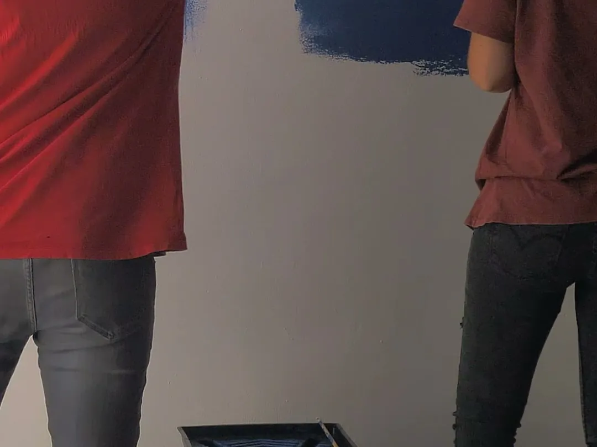

Umezeala și mucegaiul în casele din Cipru: cauze și soluții durabile
Vopseaua peste mucegai îl ascunde doar câteva săptămâni. Iată cum găsim cauza reală și o rezolvăm definitiv.

5 min de citit · Ultima actualizare 2026-11-11
Trei probleme diferite
Umezeala din casele cipriote are de obicei una din trei cauze, iar fiecare cere altă soluție.
Condensul: aerul cald și umed din casă întâlnește pereții reci iarna. Frecvent în dormitoare, băi și colțurile pereților exteriori.
Infiltrațiile: apă de la acoperiș, terasă, duș sau o țeavă ascunsă. De obicei o pată clară care crește după ploaie sau utilizare.
Umezeala ascensională: umiditatea din sol urcă pe pereții de la parter, lăsând săruri și tencuială care se macină lângă pardoseală.
Cum găsim cauza
Facem măsurători de umiditate, observăm unde și când apare umezeala, verificăm acoperișul și terasele de deasupra și testăm țevile unde e nevoie. Găsind mai întâi sursa, nu plătiți o reparație greșită.
Soluții durabile
Condens: ventilație mai bună, ventilatoare, izolarea pereților reci, vopsele anti-mucegai
Infiltrații: repararea acoperișului, terasei, dușului sau țevii, apoi uscarea și refacerea peretelui
Umezeală ascensională: tratament hidroizolant și tencuieli de asanare
Îndepărtarea mucegaiului cu tratament corect înainte de vopsire
Ce puteți face de azi
Aerisiți câteva minute în fiecare zi, chiar și iarna
Folosiți ventilatorul din baie și țineți ușa închisă la duș
Nu uscați rufe în casă fără aerisire
Lăsați un mic spațiu între mobilă și pereții exteriori
Constantin Secretariat · Meșter · Șef de echipăromână · greacă · engleză+357 94 091 613
inonda2026@outlook.comSediul în Strovolos, Nicosia · lucrăm în tot CiprulRăspundem în aceeași zi lucrătoare
INONDA LTD · TREI SITE-URI CONECTATE
O echipă. Următorul tău pas.
Toate cele trei site-uri aparțin INONDA LTD. Găsește serviciul potrivit, explorează un buget orientativ, apoi sună-ne pentru o inspecție și o ofertă scrisă.
inonda.site
Administrarea proprietății mele
Îngrijirea locuințelor închiriate, sprijin pentru proprietari, inspecții și administrare continuă în tot Ciprul.
Estimatorul este un instrument de planificare, nu o ofertă fermă. Lucrările specializate, echipamentele și intervențiile structurale necesită o evaluare separată. Estimările salvate rămân în browserul tău pe inonda.homes.
Programează o inspecție
Evaluăm, ofertăm și preluăm doar lucrări care durează mai mult de o zi. Reparațiile mici și lucrările de câteva minute sau ore se execută doar pentru clienții cu contract de mentenanță.